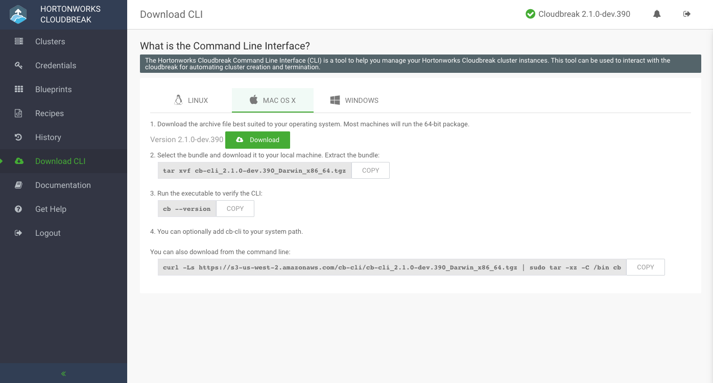

Install Cloudbreak CLI
The Cloudbreak Command Line Interface (CLI) is a tool to help you manage your Cloudbreak cluster instances. This tool can be used to interact with Cloudbreak for automating cluster creation, management, monitoring, and termination.
The CLI is available for Linux, Mac OS X, and Windows.
Install the CLI
After you have launched Cloudbreak, the CLI is available for download from that Cloudbreak instance.
Steps
- Browse to your Cloudbreak instance and log in to the Cloubdreak web UI.
- Select Download CLI from the navigation pane.
- Select your operating system. The CLI is available for Linux, Mac OS X, and Windows:
 - Download the selected bundle to your local machine.
- Extract the bundle.
- You can optionally add
cbto your system path. -
Run the executable to verify the CLI:
cb --version
Configure the CLI
Once you have installed the CLI, you need to configure the CLI to work with Cloudbreak.
Steps
-
Use the
cb configurecommand to set up the CLI configuration file. The configuration options are:- --server server address [$CB_SERVER_ADDRESS]
- --username user name (e-mail address) [$CB_USER_NAME]
- --password password [$CB_PASSWORD]
The password configuration is optional. If you do not provide the password, no password is stored in the CLI configuration file. Therefore, you will need to provide the password with each command you execute or via an environment variable.
For example:
cb configure --server https://ec2-11-111-111-11.compute-1.amazonaws.com --username admin@hortonworks.com
-
The CLI configuration file will be saved at
~/.cb/config. The content will look similar to the following:default: username: admin@hortonworks.com server: https://ec2-11-111-111-11.compute-1.amazonaws.com
-
Run any command to verify that you can connect to the Cloudbreak instance via CLI. For example:
cb list-clusters
Configuration Precedence
The CLI can look for configuration options from different locations. You can optionally pass the configuration options on each command or from environment variables. The following order is used for the CLI to look for configuration options: Command Line, Environment Variables and the Configuration File.
Add Multiple Configurations
If you are using multiple profiles for multiple environments, you can configure them using the cb configure command and passing the name of your environment-specific profile file using the --profile parameter. After running the command, the configuration will be added as a new entry to the config file. For example, running the following command cb configure --server https://192.167.65.4 --username test@hortonworks.com --profile staging will add the "staging" entry:
default: username: admin@hortonworks.com server: https://192.167.65.4 staging: username: test@hortonworks.com server: https://192.167.65.4
For example:
#cb configure --server https://192.167.65.4 --username test@hortonworks.com --profile staging INFO: [writeConfigToFile] dir already exists: /Users/rkovacs/.cb INFO: [writeConfigToFile] writing credentials to file: /Users/rkovacs/.cb/config # cat /Users/rkovacs/.cb/config default: username: admin@example.com server: https://192.167.65.4 output: table staging: username: test@hortonworks.com server: https://192.167.65.4
Configure Default Output
By default, JSON format is used in command output. For example, if you run cb list-clusters without specifying output type, the output will be JSON. If you would like to change default output, add it to the config file. For example:
default: username: admin@hortonworks.com server: https://192.167.65.4 output: table
Get Started with the CLI
After installing and configuring the CLI, you can use it to perform the same tasks as are available in the Cloudbreak UI: create and manage clusters, credentials, blueprints, and recipes.
Steps
-
The first step is to create at least one Cloudbreak credential using the create-credential command.
-
If you are just getting started, you may want to try one of the default blueprints. You can use list-blueprints and describe-blueprint to learn about those default blueprints.
In case you would like to use your own blueprint, you can add it using crate-blueprint command.
-
(Optional) You can optionally create recipes (custom scrpts) and add them using the create-recipe command.
-
To create a cluster, first generate a JSON skeleton using the generate-cluster-template command. You can copy it to a text editor and save it in JSON format.
-
Edit the JSON file by providing your parameters.
-
Once your JSON file is ready, you can use it to create a cluster via the create-cluster command.
-
Once your cluster is running, use can use the CLI to manage and monitor your cluster:
For a full list of commands, refer to CLI Reference.
Get Help
To get CLI help, you can add help to the end of a command. The following will list help for the CLI at the top-level:
cb help
or
cb h
The following will list help for the create-cluster command, including its command options and global options:
cb create-cluster help
or
cb create-cluster h